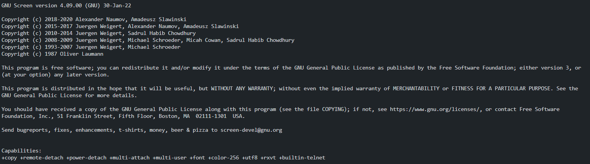
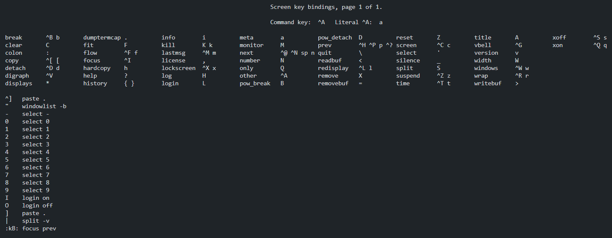

Tuesday, December 27, 2022
Утилита Screen в Linux
Как пользоваться утилитой Screen на Debian, Ubunt и их производных.
Screen - терминальный мультиплексор. Дает возможность внутри действующей сессии открыть много виртуальных терминалов. Процесс, запущенный внутри сессии через screen, будет продолжаться после отключения от сессии.
На некоторых системах пакет screen может быть уже установлен,
screen --version
Screen version 4.09.00 (GNU) 30-Jan-22
а если нет, то устанавливается он самым обычным способом.
sudo apt install screen
Запуск
screen

Создастся новая сессия программы и появится приветственное сообщение. Для его закрытия нужно нажать Space или Enter.
Создать сессию с именем
screen -S <имя сессии>
Cписок доступных команд:
Ctrl+a и ?

Все управляющие команды начинаются с комбинации клавиш Ctrl + a, затем следует буква или сочетание клавиш.
Буквы разных регистров выполняют разные команды.
Cоздать новое окно Ctrl+a и c
Просмотр списка созданных Ctrl + a и w
Переключиться на окно с номером 2 Ctrl+a и 2
Переименовать текущее окно Ctrl+a и A
Разделить окно по горизонтали Ctrl+a и S
Разделить окно по вертикали Ctrl+a и |
Переключить фокус на следующую область разделенного окна Ctrl+a и tab
Скрыть все окна и оставить только текущее Ctrl+a и Q
Закрыть текущую область Ctrl+a и X
Cкрыть все окна сессии Ctrl + a и \ Подтвердите решение нажатием y
Выйти из screen Ctrl + a и d
Запущеннй процесс не остановится и будет продолжать свое выполнение. Если сессия одна, что бы в нее вернуться достаточно
screen -r
Чтобы перейти в нужную сессию следует указать параметру -r её id или название.
screen -r 34566
Посмотреть список запущенных сессий
screen -ls